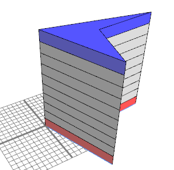

split attribute
The split shape attribute consists of two integer numbers (represented as floats because CGA does not know an integer type) describing the number of total elements in the last split and the index of the current shape.
This attribute can not be set. It is written during the split operation.
Related
Examples
Example

Lot --> extrude(20) A
A --> split(y) { 2 : B }*
B -->
case split.index == 0: color("#ff0000") X.
case split.index == split.total-1: color("#0000ff") X.
else: X.